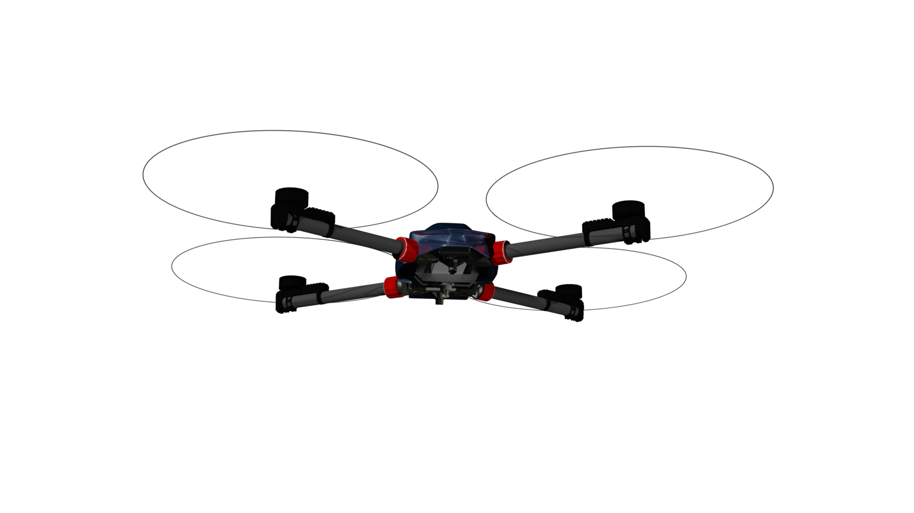

Built for operators who need more than generic drone capability
InSky aircraft are being shaped around useful payload, mission flexibility, and practical field deployment across demanding use cases.

Logistics and aerial transport
For missions where payload delivery matters more than camera-first drone assumptions, InSky platforms are being developed to support compact logistics, field transport, and difficult-access operations.
Public safety and emergency response
Payload flexibility and rapid deployment can create value in public-safety support, emergency logistics, and specialized field response missions.
Infrastructure inspection
Inspection work often benefits from aircraft that can carry more capable payloads, sensors, and support equipment without being forced into narrow platform limitations.
Cinematography and specialty payload work
InSky platforms are being developed to support professional payload integration and specialty field workflows without forcing operators into a narrow equipment stack.
Research and test operations
A broad operating envelope and configurable architecture can make InSky platforms useful for research, testing, and mission-specific integration.
Industrial heavy-lift and terrain-constrained work
InSky’s longer-range heavy-lift direction is aimed at missions where roads, cranes, or conventional logistics approaches are expensive, slow, or impractical.
Discuss your mission
If you are evaluating a mission that requires more payload flexibility, greater field utility, or a more capable aerial platform architecture than mainstream systems provide, contact InSky to discuss fit.
Discuss a mission